Копии обработаны без искусственного увеличения разрешения. Пропорции сохранены; для экранов подготовлены разные размеры. Обработанные версии доступны на условиях указанной для них лицензии. Фотографии с пометкой «вариант подачи» иллюстрируют сервировку, а точный состав напитка указан в рецепте.
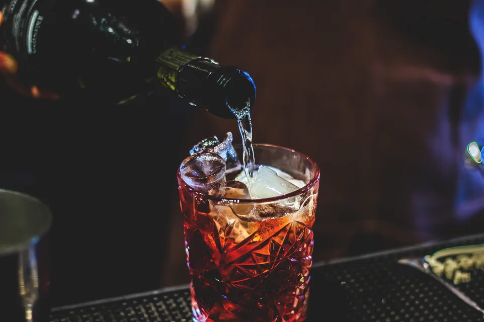
Наливание Negroni Sbagliato в хрустальный бокал
Автор: Wine Dharma. Лицензия: CC BY 2.0.
Оригинал: 5184 × 3456 пикселей.
Большая версия сайта: 3840 × 2560 пикселей.
WebP-конверсия и уменьшение без увеличения исходника; кадрирование при отображении.
Космополитен в коктейльном бокале
Автор: CrystalMixer - CrystalMixer.com. Лицензия: CC BY 4.0.
Оригинал: 4212 × 4188 пикселей.
Большая версия сайта: 3840 × 3818 пикселей.
WebP-конверсия и уменьшение без увеличения исходника; кадрирование при отображении.
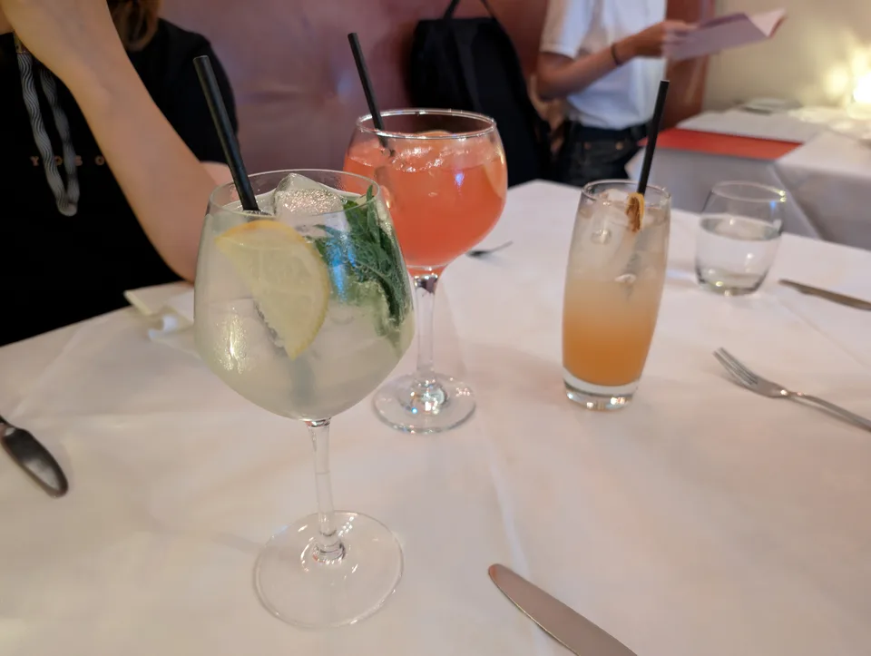
Безалкогольные коктейли в бокалах на столе
Автор: Andy Li. Лицензия: CC0.
Оригинал: 8160 × 6144 пикселей.
Большая версия сайта: 3840 × 2891 пикселей.
WebP-конверсия и уменьшение без увеличения исходника; кадрирование при отображении.
Негрони в низком хрустальном бокале
Автор: Will Shenton. Лицензия: CC BY-SA 3.0.
Оригинал: 5184 × 3456 пикселей.
Большая версия сайта: 3840 × 2560 пикселей.
WebP-конверсия и уменьшение без увеличения исходника; кадрирование при отображении.
Негрони с апельсиновой цедрой
Автор: Sudhertzen. Лицензия: CC BY-SA 4.0.
Оригинал: 4032 × 3024 пикселей.
Большая версия сайта: 3840 × 2880 пикселей.
WebP-конверсия и уменьшение без увеличения исходника; кадрирование при отображении.
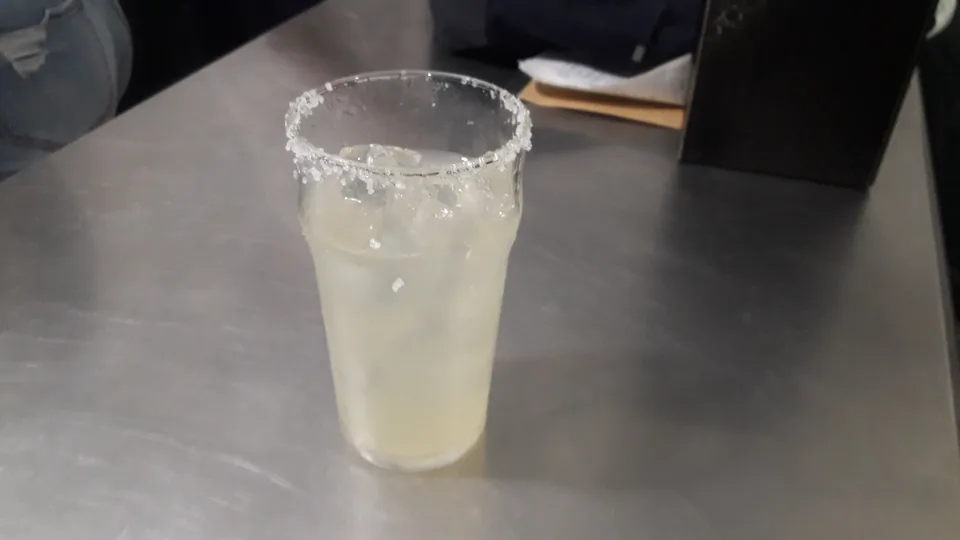
Маргарита с солёным краем бокала
Автор: El Nuevo Doge. Лицензия: CC0.
Оригинал: 4128 × 2322 пикселей.
Большая версия сайта: 3840 × 2160 пикселей.
WebP-конверсия и уменьшение без увеличения исходника; кадрирование при отображении.
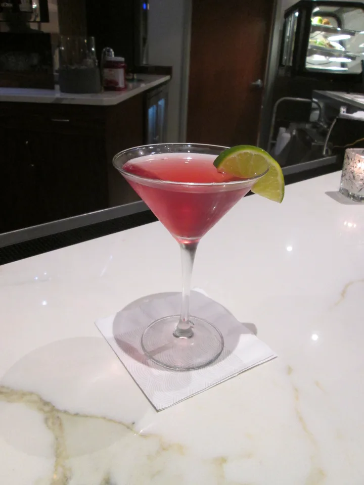
Космополитен в бокале на ножке
Автор: Infrogmation of New Orleans. Лицензия: CC BY 2.0.
Оригинал: 3456 × 4608 пикселей.
Большая версия сайта: 2880 × 3840 пикселей.
WebP-конверсия и уменьшение без увеличения исходника; кадрирование при отображении.
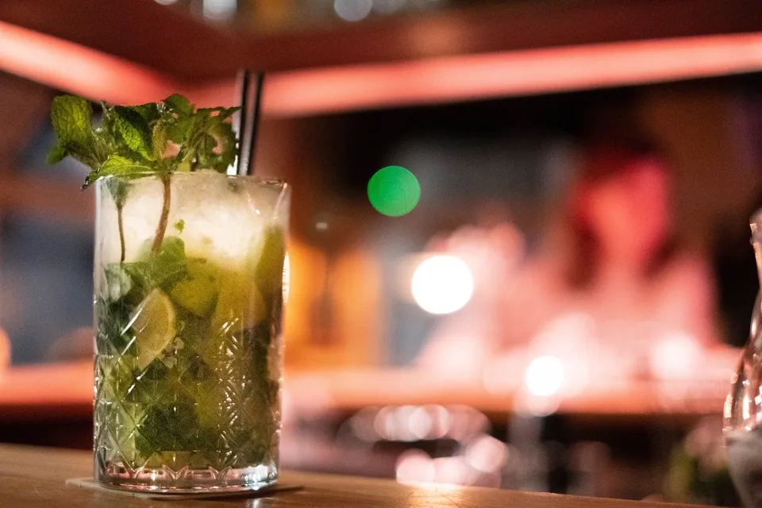
Мохито с мятой и льдом на барной стойке
Автор: Dktue. Лицензия: CC0.
Оригинал: 6240 × 4160 пикселей.
Большая версия сайта: 3840 × 2560 пикселей.
WebP-конверсия и уменьшение без увеличения исходника; кадрирование при отображении.
Вариант подачи красного коктейля с цитрусом
Автор: Jez Timms jeztimms. Лицензия: CC0.
Оригинал: 5313 × 3547 пикселей.
Большая версия сайта: 3840 × 2564 пикселей.
WebP-конверсия и уменьшение без увеличения исходника; кадрирование при отображении.
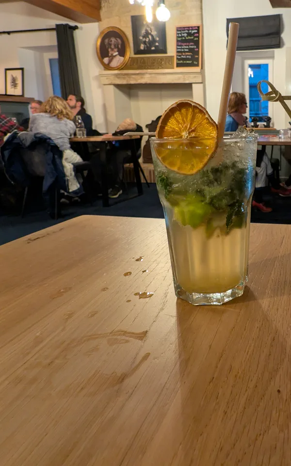
Безалкогольный коктейль с мятой и цитрусом — вариант подачи
Автор: Andy Li. Лицензия: CC0.
Оригинал: 8160 × 6144 пикселей.
Большая версия сайта: 2400 × 3840 пикселей.
Кадрирование и WebP-конверсия; уменьшение без увеличения исходника.
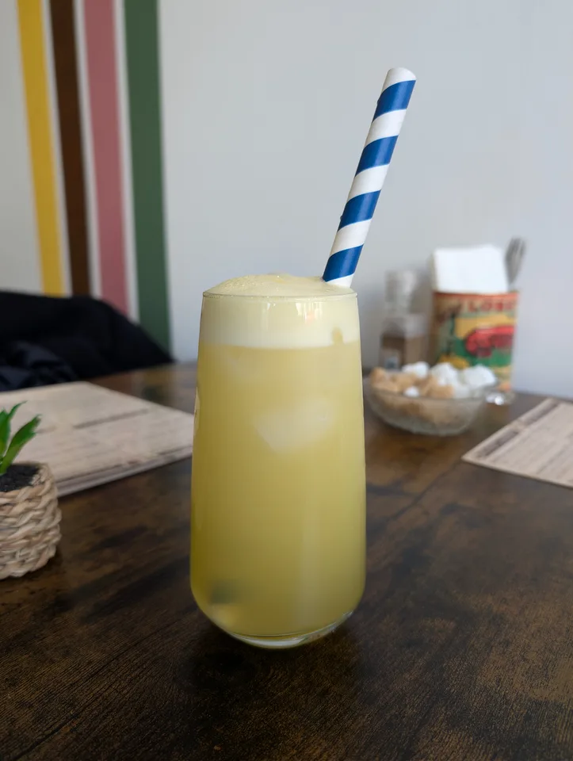
Домашний лимонад в высоком бокале
Автор: Andy Li. Лицензия: CC0.
Оригинал: 6144 × 8160 пикселей.
Большая версия сайта: 2891 × 3840 пикселей.
WebP-конверсия и уменьшение без увеличения исходника; кадрирование при отображении.
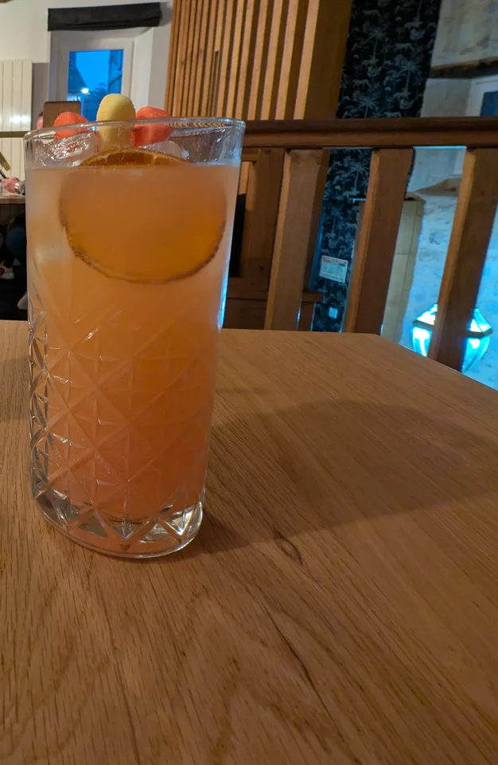
Ягодно-цитрусовый моктейль — вариант подачи
Автор: Andy Li. Лицензия: CC0.
Оригинал: 8160 × 6144 пикселей.
Большая версия сайта: 2504 × 3840 пикселей.
Кадрирование и WebP-конверсия; уменьшение без увеличения исходника.
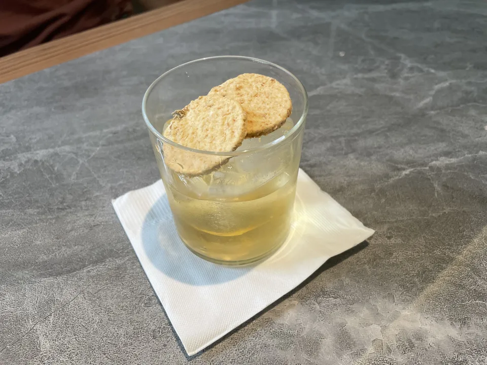
Коктейль Wingko Babat Negroni
Автор: Candramawa99. Лицензия: CC BY 4.0.
Оригинал: 4032 × 3024 пикселей.
Большая версия сайта: 3840 × 2880 пикселей.
WebP-конверсия и уменьшение без увеличения исходника; кадрирование при отображении.
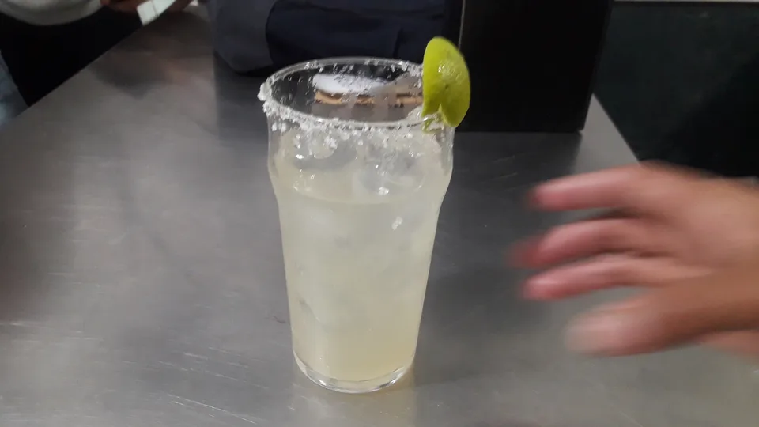
Маргарита со льдом и солёным краем
Автор: El Nuevo Doge. Лицензия: CC0.
Оригинал: 4128 × 2322 пикселей.
Большая версия сайта: 3840 × 2160 пикселей.
WebP-конверсия и уменьшение без увеличения исходника; кадрирование при отображении.
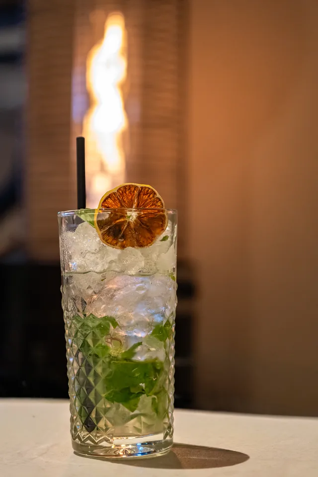
Подача коктейля Fresh Mojito Premium
Автор: Rjcastillo. Лицензия: CC BY-SA 4.0.
Оригинал: 4494 × 6741 пикселей.
Большая версия сайта: 2560 × 3840 пикселей.
WebP-конверсия и уменьшение без увеличения исходника; кадрирование при отображении.
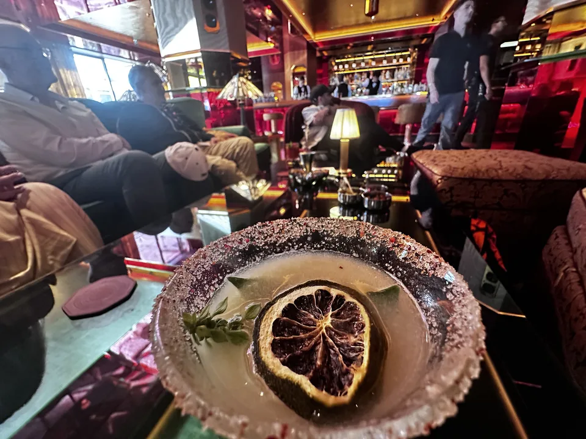
Бокал с цитрусовым гарниром на стойке настоящего бара
Автор: Nicoleon. Лицензия: CC BY-SA 4.0.
Оригинал: 4032 × 3024 пикселей.
Большая версия сайта: 3840 × 2880 пикселей.
WebP-конверсия и уменьшение без увеличения исходника; кадрирование при отображении.
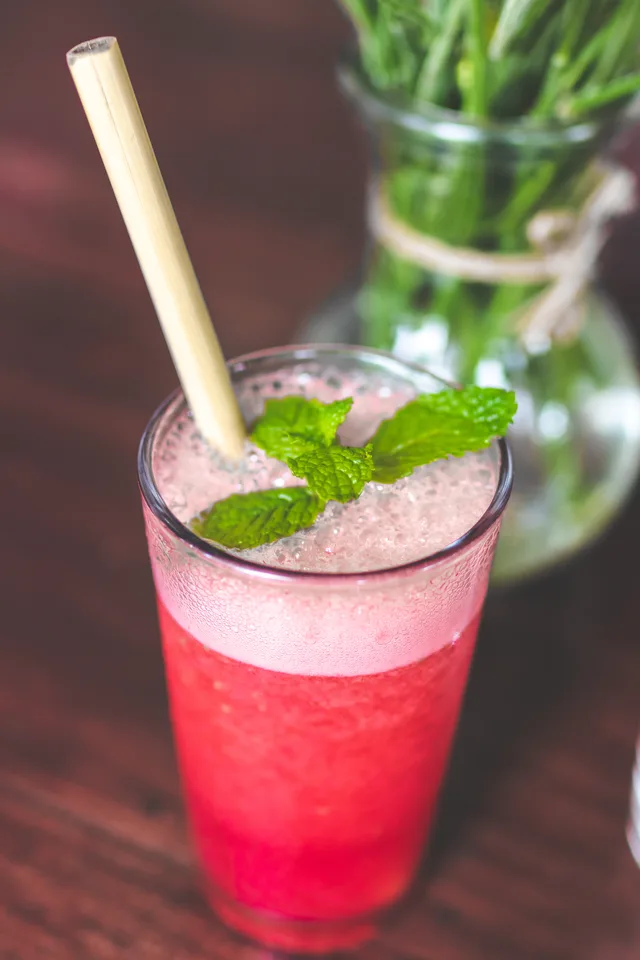
Малиновый лимонад с мятой и льдом
Автор: Artem Beliaikin from Moscow, Russia. Лицензия: CC0.
Оригинал: 4000 × 6000 пикселей.
Большая версия сайта: 2560 × 3840 пикселей.
WebP-конверсия и уменьшение без увеличения исходника; кадрирование при отображении.
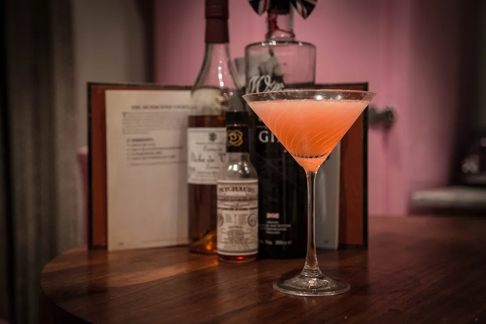
Коктейль Pendennis Club с бутылками ингредиентов
Автор: Adrian Scottow. Лицензия: CC BY-SA 2.0.
Оригинал: 5472 × 3648 пикселей.
Большая версия сайта: 3840 × 2560 пикселей.
WebP-конверсия и уменьшение без увеличения исходника; кадрирование при отображении.